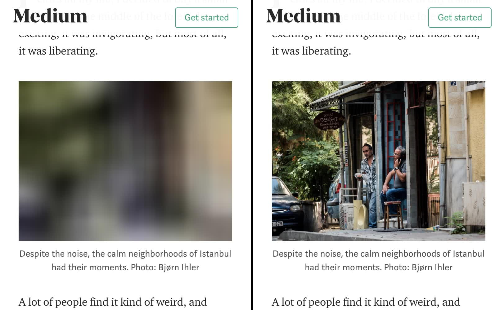
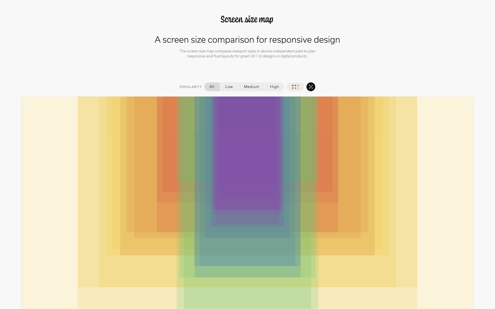
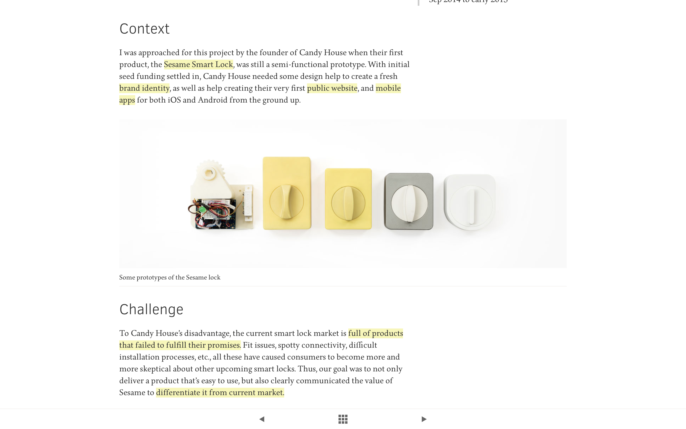

This article revisits how we should update our usage of dialog windows these days. A modal window is an element that sits on top of an application’s main window that creates a mode that disables the main window but keeps it visible with the modal window as a child window in front of it. Users must interact with the modal window before they can return to the parent application. It is used to grab reader's attention, acquire user input, and to show additional information in context. Do not use it for errors or warning messages, these should be kept on the page. Be sure to include an escape hatch, a way to close the modal with high visibility or mapping, such as clicking outside the window. Give a descriptive title about the modal to give conntext. Include buttons with actionable, understandable names. In terms of the sizing and location, it shouldn't be too big or too small, should be just right! Should not take up the whole screen view since its purpose is just to keep context. A new page should be created instead if a scrollbar is needed for the modal. In terms of location, it should be placed at the upper half of the screen because in mobile view modal may be lost if placed lower. In terms of size, it should not take up more than 50% of the screen. To improve focus, use a lightbox effect (darken the background) which draws attention to the modal and indicates that the user cannot interact with the parent page. Modals should be triggered by users, through clicking a button, selecting an option or following a link. It shouldn't surprise users because it may result in a quick dismissal of the window. Modals should not be used on mobile devices. To improve keyboard accessibility, the element that triggers the modal must be keyboard accessible. The keyboard focus needs to be moved to the top of the dialog once opened, and should be trapped inside the dialog until closed. Each overlay window must have a keyboard accessible control to close that window.
Lazy Loading with JavaScript
For even faster image load time, it is possible to use JavaScript for lazy loading. Here is a website I found that contains a comprehensive list of design principles and methods to optimize image load time. Lazy-loading is a technique that defers loading of non-critical resources at page load time. Instead, these non-critical resources are loaded at the moment of need. Where images are concerned, "non-critical" is often synonymous with "off-screen". A good example is the platform Medium who uses loads lightweight placeholder images at page load, typically a 20px wide small image below 30 bytes with blur filter applied over it, and replaces them with lazily-loaded images as they're scrolled into the viewport. Aside from JavaScript lazy loading, they also provide insight on how to optimize CSS, webfonts and other contents of a website.

Common device screen resolutions for best practices of responsive design
This interesting site illustrated the most commonly used device screen dimensions for designers. I noticed on my image-heavy portfolio site, it often takes a long time to load which decreases user experience. In order to resize my images for the srcset, I needed to know which dimensions should I focus on resizing to. This webpage along with this other website provided me great reference for the best design practices for image resizing and responsive web design. The width that I chose to focus on are: 400w, 800w, 1080w, 1280w, 1440w, 1600w and 2560w. For less imporant images, I chose to focus on just 800w, 1280w and 2560w.

What image format to use? JPG, PNG, GIF, SVG?
I was confused about what type of image to include for best web design practices whether it be jpg, png, gif or svg. Upon reading this article from Adobe, SVG graphics would be the best for vector art since it is easy to rescale in web design without costing a lot of time to load. Animations can be implemented usin gif, however it only supports 256 colors. Png is the suited for graphic illustrations, best for clear cut edges. Jpg are for photographs that are large in size since this format compresses well.
Highlight Text Animation
I saw a portfolio using highlight animation as the user scroll through the page, which was really cool. I searched up on how it can be implemennted and found that the mark tag or the span tag are particularly useful in this case.

Optimize Responsive Images
I came across two articles that discuss the effective optimization of image-heavy websites. They speed up image load time by incorporating srcset that decides which image size to use according to device type, as well as taking display pixel resolution (DPR) into consideration (1x, 2x). By selecting the appropriate image width that matches the size and resolution it will be displayed on devices, this will decrease image load time and prevent loading a large sized image to merely be displayed on a small phone.